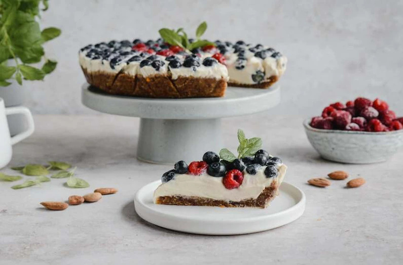

Tofurnik (sernik z tofu) - bez glutenu, bez jajek, bez laktozy, wegański

Opis
Ciasto bez glutenu, bez jajek, bez laktozy – czy wobec tego można w nim znaleźć cokolwiek? Jasna sprawa!
Sekretem przepisu na wegański tofurnik jest wykorzystanie produktów, które być może rzadziej pojawiają się w kuchniach, ale z pewnością zasługują na uwagę.
Przyjrzyjcie im się z bliska.
Dla kogo?
Po nasz tofurnik śmiało sięgną zwolennicy diet roślinnych lub osoby zmagające się z nietolerancją glutenu i laktozy. O dokładkę poproszą jednak również ci smakosze,
którzy na co dzień nie wyłączają popularnych składników z diety – niebanalny sernik wegański smakuje każdemu.
Na jaką okazję?
Tofurnik bezglutenowy z powodzeniem można umieścić na świątecznym stole obok tradycyjnych serników i mazurków. Okaże się dla nich poważną konkurencją!
Czy wiesz że?
Dieta wegańska wyklucza z jadłospisu wszelkie produkty pochodzenia zwierzęcego. Mowa nie tylko o oczywistym mięsie, ale również o nabiale, galaretkach z żelatyny czy miodzie.
Dla urozmaicenia
Oprócz owoców, do ozdobienia tofurnika bez glutenu użyjcie płatków migdałowych.
Składniki:
spód:
- migdały..........................120 gramów
- morele suszone...................100 gramów
- daktyle..........................50 gramów
- olej kokosowy....................1 łyżka
- sól..............................1 szczypta
masa:
- tofu.............................400 gramów
- cytryna..........................1 sztuka
- napój kokosowy...................400 mililitrów
- agar.............................3 łyżeczki
- drobny cukier trzcinowy..........120 gramów
- cukier waniliowy.................0.5 opakowania
do dekoracji:
- borówki..........................150 gramów
- maliny...........................10 gramów
Przygotowanie krok po kroku.
- Morele oraz daktyle namaczamy w ciepłej wodzie ok. 15 min. Migdały przesypujemy do miski.
Wrzucamy odsączone morele oraz daktyle. Dodajemy olej kokosowy oraz sól.
Całość blendujemy na gładką masę.
- Tortownice wykładamy papierem do pieczenia. Spód wykładamy ciastem.
- Do rondelka wlewamy gęstą część napoju kokosowego. Dodajemy agar.
Całość podgrzewamy, aż masa zacznie bulgotać.
- Następnie dodajemy pokrojone na kawałki tofu.
Wyciskamy sok z cytryny, dosypujemy zmielony na puder cukier trzcinowy oraz cukier waniliowy.
Całość blendujemy na gładką masę.
- Masę przelewamy na migdałowy spód.